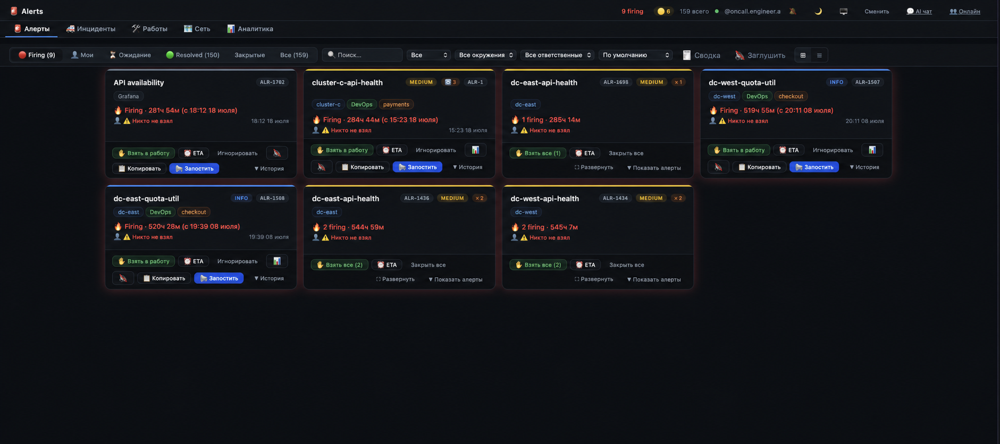
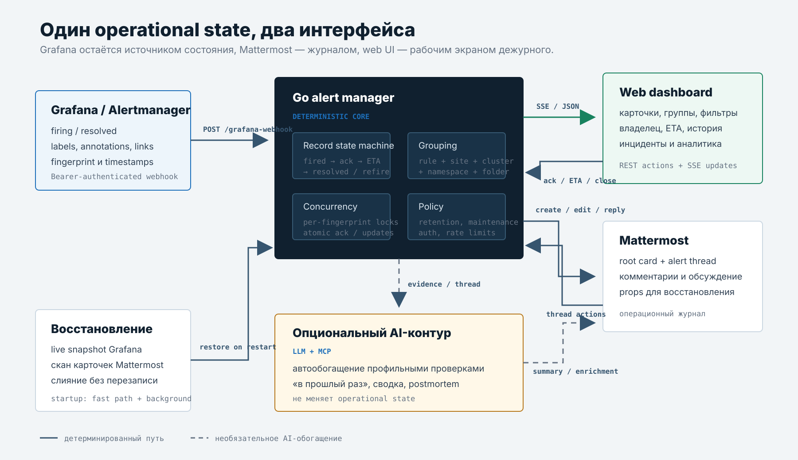
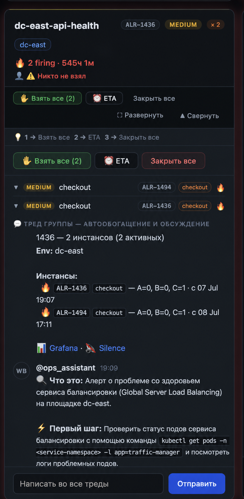
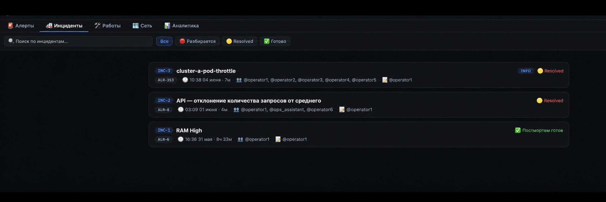
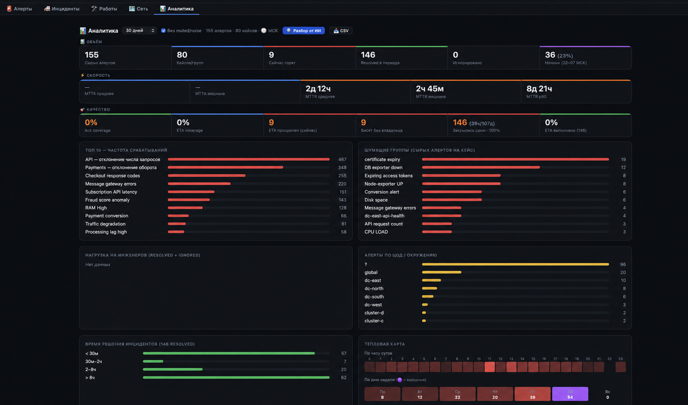

Алертинг у нас построен на правилах Grafana. Сами правила описаны в Terraform, хранятся в Git и применяются через CI/CD-пайплайн. Такой подход даёт review, историю изменений и воспроизводимую конфигурацию вместо ручного редактирования правил в интерфейсе.
Дальше Grafana Alertmanager маршрутизирует уведомления по labels в несколько каналов внутреннего Mattermost. За этими каналами следит дежурная смена. В Grafana также есть отдельная доска, которая выводит активные алерты списком. Она помогла видеть общую картину, но не решила вопрос, что происходит с каждым алертом после доставки.
Во время всплеска нужное сообщение иногда теряется среди десятков похожих. Некоторые алерты горят неделю, а обновления по ним появляются раз в несколько дней и каждый раз начинаются почти с нуля, как будто сигнал пришёл только что. Дежурные меняются и не всегда помнят, разбирали ли этот алерт раньше, занимается ли им другой инженер и кто сейчас ведёт исправление — инфраструктура или команда разработки. Получается своеобразная карусель: алерт продолжает гореть, люди меняются, а контекст приходится восстанавливать заново.
Доска в Grafana сделала поток заметнее, но не добавила владельца, ETA, историю работы и передачу между сменами. Поэтому внутри существующего Go-бота появился operational dashboard. Он не заменяет Grafana и Mattermost, а связывает их общим состоянием: firing, владелец, ETA, тред, история повторов, resolved, инцидент и postmortem.

Все имена людей, сервисов, команд и площадок на скриншотах заменены. Состояния, числовые показатели и устройство интерфейса сохранены.
Что получилось#
Сейчас dashboard проходит пилотную эксплуатацию у нескольких сотрудников и продолжает дорабатываться. Основная концепция уже работает: он закрывает не наблюдаемость как таковую, а операционный слой вокруг неё.
- Показывает активные, взятые, ожидающие ETA, resolved и вручную закрытые алерты.
- Объединяет несколько инстансов одного правила в один кейс и один Mattermost-тред.
- Позволяет взять алерт или группу в работу, назначить ETA, передать другому инженеру и оставить комментарий.
- Напоминает владельцу и участникам обсуждения о просроченном ETA и выделяет такую карточку в dashboard.
- Сохраняет историю повторных срабатываний под стабильным
ALR-N. - Связывает карточку с Grafana, Silence и обсуждением в Mattermost.
- Поддерживает maintenance windows, чтобы ожидаемый шум не становился очередью инцидентов.
- Формирует реестр разобранных инцидентов и postmortem из рабочего треда.
- Предлагает объединить одновременный каскад алертов в один общий разбор, оставляя подтверждение за инженером.
- Считает MTTA — время до принятия в работу, MTTR — время до устранения, покрытие владельцами и ETA, повторные срабатывания, шумящие группы и временные пики.
Рядом находятся реестр инфраструктурных работ и карта сетевых связей. Они не определяют статус алерта, но дают дежурному контекст: не совпал ли всплеск с объявленным обслуживанием и нет ли общего сетевого сбоя.
Пока рано говорить, что процесс всей дежурной команды уже изменился. Но цель и границы решения определены, а пилот подтверждает основную механику: состояние дежурства можно собрать из разрозненных вкладок и памяти отдельных людей в один интерфейс. Источники при этом не подменяются: текущее состояние алерта сверяется с Grafana, а обсуждение команды и действия инженеров остаются в Mattermost.
Почему Grafana и чата по отдельности не хватает#
Обычная цепочка «Alertmanager → webhook → сообщение в канал» решает доставку, но оставляет открытыми несколько вопросов:
- действительно ли кто-то уже занимается проблемой;
- когда ждать следующий результат;
- относятся ли двадцать сообщений к одному сбою или к разным;
- что происходило при предыдущем срабатывании;
- какие правила создают больше всего работы, а какие только больше всего сообщений.
Доска алертов в Grafana частично решает первую проблему: активные сигналы больше не нужно искать только в потоке сообщений. Но она не знает, кто занимается проблемой, где идёт обсуждение, какой срок обещан и что происходило при прошлом срабатывании. Попытка отвечать на эти вопросы только реакциями и свободным текстом в чате быстро упирается в неструктурированность. Попытка перенести всё в отдельный dashboard создаёт вторую реальность, которая расходится с обсуждением.
Поэтому чат и dashboard должны были стать двумя представлениями одного состояния. Действие в web UI появляется в Mattermost, ответ в треде меняет карточку, а владелец и ETA в обоих интерфейсах всегда относятся к одной записи алерта.
Архитектура#
Подсистема алертов является частью Go-приложения. Отдельной базы данных для первой версии не заводили: активное состояние сверяется с Grafana API, а владельцы, ETA, комментарии и история действий восстанавливаются из карточек и тредов Mattermost.
Terraform alert rules
→ Git + CI/CD
→ Grafana Alerting / Alertmanager
→ authenticated webhook
→ alert record in Go
→ Mattermost card + thread
→ live web dashboard
dashboard action / thread reply
→ the same alert record
→ synchronized card and live UI
bot start or restart
→ current alerts from Grafana API
→ ownership and history from Mattermost
→ restored dashboard
Mattermost unavailable
→ Grafana webhooks and UI continue working
→ Mattermost synchronization resumes laterGrafana отправляет для каждого инстанса fingerprint, labels, annotations, время начала и завершения, а также ссылки на правило и Silence. Backend нормализует это в Record и сериализует изменения по fingerprint, чтобы параллельный webhook и действие пользователя не перетёрли друг друга.
При открытии страницы UI получает текущий список алертов. После этого сервер присылает только изменения, поэтому страницу не нужно обновлять вручную. Действие в браузере меняет ту же запись, что кнопка или сообщение в Mattermost: состояние не расходится между двумя интерфейсами. Технически начальная загрузка работает через JSON API, а обновления — через Server-Sent Events, но вся логика переходов остаётся в Go-коде, а не в JavaScript и не в промпте.

Жизненный цикл алерта#
Для пользователя это обычная карточка. На сервере за ней хранится последовательность событий: когда алерт сработал, кто взял его в работу, какой поставили ETA, когда пришёл resolve и было ли повторное срабатывание. Допустимые переходы заданы явно:
fired
→ acked
→ eta_set
→ eta_expired
→ resolved
другие ветки:
fired → closed
resolved / closed → refire
acked → reassignedУ записи алерта есть время срабатывания, владелец, время принятия в работу, ETA, статус, ссылки, тред и упорядоченная хронология. При повторном срабатывании сохраняется тот же ALR-N, а завершённый интервал добавляется в историю. Благодаря этому можно показать «в прошлый раз», посчитать медиану длительности и не потерять связь с предыдущим обсуждением.
Если два инженера одновременно нажали «Взять в работу», владельцем становится тот, чей запрос сервер обработал первым. Второй инженер увидит, что карточку уже забрали, и кем именно. Система не перезаписывает владельца молча, поэтому два человека не начнут параллельно разбирать один и тот же алерт, считая его своим.
Когда установленный ETA заканчивается, бот автоматически напоминает об этом владельцу и участникам связанного обсуждения. Просроченная карточка остаётся заметной и в dashboard, поэтому срок не нужно держать в памяти или искать в старых сообщениях.
Один случай вместо сотни сообщений#
Один Grafana rule может создать отдельный fingerprint на каждый сертификат, pod, endpoint или хост. Если просто публиковать payload, один сбой превращается в десятки одинаковых тредов.
Автогруппировка использует не только имя алерта. В ключ входят площадка, cluster, namespace и Grafana folder:
group key =
alert name
+ site
+ cluster
+ namespace
+ grafana folderЭто защищает от противоположной ошибки: одинаковое правило в двух ЦОДах не должно случайно стать одним инцидентом и получить общего владельца. Инстансы внутри корректной группы используют один корневой пост и общий тред, а карточка показывает их состояние по отдельности.

Для независимых проблем есть ручные группы. Отдельно обрабатывается каскадный сбой: когда за короткое время срабатывает много разных правил, AI сопоставляет время, окружение, namespace, сервисы и известные инфраструктурные зависимости. Вместо десятков разрозненных карточек он предлагает кандидатов на один общий разбор.
Это именно предложение, а не автоматическое назначение первопричины. Два алерта могут совпасть по времени случайно, поэтому окончательную группировку подтверждает инженер. После подтверждения у каскада появляется общий владелец, ETA и тред, а отдельные сигналы остаются видны внутри группы.
Mattermost как операционный журнал#
Хранить всё только в оперативной памяти нельзя: после перезапуска или публикации новой версии бота дежурный не должен увидеть пустой экран. Заводить отдельную базу только ради карточек на первом этапе тоже не хотелось.
Поэтому корневой пост карточки содержит не только текст для человека, но и скрытые структурированные поля: идентификатор алерта, статус, владельца и ETA. Ответы остаются обычным тредом, который читает команда. При запуске бот сканирует свои карточки и восстанавливает из этих полей рабочее состояние.
Это не попытка использовать чат как универсальную базу данных. В Mattermost сохраняется ровно то, что уже является частью операционного журнала: карточка, действия и обсуждение. Быстро меняющееся состояние остаётся в памяти Go-процесса, а Grafana API используется для сверки того, какие алерты действительно продолжают гореть.
Внешний тред расследования можно связать с ALR-N. Тогда ETA и resolve появляются там же, где команда обсуждает проблему, а при следующем срабатывании карточка ведёт к прошлому разбору. В пилотной версии такая история хранится один месяц: более старые треды бот не подгружает. Эту глубину можно будет пересмотреть, когда накопится статистика по повторным срабатываниям и станет понятна реальная ценность более длинной истории.
Инциденты и postmortem#
Не каждый firing заслуживает отдельного postmortem. Поэтому алерт и инцидент — разные сущности. Серьёзные инциденты команда обычно разбирает в звонке, но параллельно ведёт рабочий тред во внутреннем мессенджере: туда попадают наблюдения, ссылки, промежуточные выводы и принятые решения.
Бот собирает сообщения из треда, связанные алерты, действия инженеров и точные времена в единую хронологию. После завершения разбора инженер может сформировать postmortem для одного или нескольких ALR-N. LLM структурирует уже собранные факты по четырём вопросам: что произошло, причина, что сделали и как предотвратить повтор.
Получившийся INC-N хранит ссылки на исходные алерты и обсуждение. В списке видны статус разбора, длительность, участники и автор. Хронологию и итоговый разбор можно открыть как отдельный HTML-отчёт: он удобен для ревью после звонка и не требует вручную собирать события из нескольких тредов. Прошлые инциденты можно искать не только по названию правила, но и по тексту postmortem.

LLM здесь не придумывает timeline и не определяет статус. Она редактирует уже состоявшееся обсуждение. Если в треде причина не установлена, корректный postmortem должен так и сказать.
В аналитике нужно считать кейсы#
Самая простая аналитика по алертам почти всегда вводит в заблуждение. Сто fingerprint одного правила выглядят как сто инцидентов. Плановые работы портят MTTR. А запрос «за 30 дней» становится неоднозначным: считать по времени firing, ack или resolve?
Разные показатели считаются по разным наборам событий:
| Метрика | Как попадает в период | Почему |
|---|---|---|
| Объём и частота | по fired_at | показывает, когда возникла нагрузка |
| MTTA | по acked_at | измеряет реакцию, состоявшуюся в периоде |
| MTTR | по resolved_at | учитывает завершённые в периоде кейсы, даже если они начались раньше |
| Firing сейчас | без временной отсечки | это текущее состояние, а не историческая выборка |
Сырые алерты и логические кейсы показываются отдельно. Maintenance и технический noise можно исключить из основных чисел, но они не исчезают бесследно: их объём остаётся виден отдельно. Так график отвечает на вопрос о работе команды, а не о количестве строк в webhook.
MTTA (Mean Time to Acknowledge) показывает, сколько времени прошло от срабатывания до принятия алерта в работу. MTTR (Mean Time to Resolve) — сколько времени прошло до устранения проблемы или закрытия кейса. Coverage владельцев показывает долю кейсов, которые кто-то взял, а ETA coverage — долю кейсов с указанным сроком следующего результата.
Также считаются просроченные ETA, self-resolved, flapping, шумящие группы, распределение по площадкам и тепловая карта по времени. AI-разбор получает уже готовый компактный JSON и только интерпретирует цифры; пересчитывать метрики модели запрещено.

Что потребовалось для эксплуатационного качества#
Основные экраны появились быстро. Большая часть работы началась во время пилота: dashboard открыли несколько сотрудников, бот стали обновлять во время активных алертов, а Mattermost перестал считаться всегда доступным.
Live-обновления без polling-шторма#
Начальная загрузка приходит через REST, изменения — по SSE. Серия быстрых событий объединяется в один browser render через requestAnimationFrame. Перезагрузка открытого треда также имеет debounce, иначе одно действие порождало несколько одинаковых запросов из SSE и optimistic update.
Индикатор соединения показывает, когда live-поток потерян. Это важнее автоматического retry самого браузера: пользователь должен понимать, смотрит он на актуальную очередь или на застывший снимок.
Рестарт не должен обнулять дежурство#
Для пилота подсистему алертов не стали выносить в отдельный сервис. Она работает внутри существующего Go-бота: у него уже были read-only-доступы к внутренним системам, интеграция с Mattermost и необходимая инфраструктура. Это ускорило проверку идеи, но означало, что обновление или перезапуск бота не должны стирать состояние дежурства.
После запуска бот сначала быстро восстанавливает недавние карточки, чтобы интерфейс не ждал полного чтения канала. Затем в фоне он сверяет данные Mattermost с текущим списком Grafana и возвращает старые firing-алерты, которые всё ещё активны.
Политика хранения различает сущности:
- активный firing не удаляется из-за возраста;
- resolved и closed восстанавливаются за последние 14 дней;
- завершённые инциденты хранятся 365 дней;
- maintenance window живёт до собственного срока окончания.
При фоновом восстановлении историческая карточка добавляется только в том случае, если более свежего состояния ещё нет. Поэтому webhook, пришедший во время запуска, не может быть перезаписан старой копией из Mattermost. Такую гонку легко пропустить, если сначала полностью читать историю и только потом разрешать сервису принимать новые события.
Mattermost может быть недоступен#
Grafana отправляет изменения алертов в Go-бот через webhook. Если Mattermost временно не отвечает, бот всё равно получает эти сообщения, обновляет состояние в памяти и передаёт его в dashboard. Карточки, которые пока не удалось создать или обновить в чате, помечаются как ожидающие синхронизации. После восстановления Mattermost бот повторяет отправку.
На экране в это время появляется предупреждение: данные из Grafana продолжают обновляться, но сообщения и треды Mattermost могут отставать. Дежурный сразу видит, какой частью информации можно пользоваться, а какая ещё не синхронизировалась.
Безопасность внутреннего инструмента#
Webhook Grafana принимается только с отдельным Bearer token, payload ограничен по размеру и количеству алертов, а endpoint имеет rate limit. Fingerprint и параметры действий проходят allowlist-проверку формата.
Пользователь dashboard определяется middleware авторизации, а не полем username из тела запроса. Для web-доступа поддерживаются Basic Auth и OAuth. Статический HTML отдаётся с ETag и обязательной ревалидацией, чтобы после обновления backend пользователь не продолжал работать со старым JavaScript из кэша.
Это внутренний инструмент, но он умеет закрывать, назначать и комментировать реальные алерты. Значит, требования к нему ближе к операционной системе учёта, чем к read-only витрине.
Где здесь AI и почему он не управляет состоянием#
У бота есть LLM-агент и MCP-инструменты для инфраструктурной диагностики. Они используются в dashboard в нескольких местах:
- автоматическая первичная проверка для известных типов алертов;
- поиск кандидатов на общую группу при каскадном срабатывании;
- краткое «что помогло в прошлый раз» по предыдущему треду;
- сводка активной очереди;
- структурирование postmortem;
- интерпретация уже рассчитанной аналитики.
Но модель не решает, активен ли алерт, кто его взял, наступил ли ETA и можно ли объединить два разных ЦОДа. Эти переходы принадлежат Go-коду. Если LLM или MCP недоступны, dashboard теряет подсказку, но не operational state.
Это важная граница. Полезная AI-функция должна деградировать отдельно от основного процесса, иначе временный timeout модели превращается в потерю контроля над дежурством.
Ограничения#
У текущей реализации есть честные ограничения.
- In-memory state и восстановление из Mattermost подходят текущему масштабу, но для нескольких активных replica потребуется общий coordination/storage слой.
- Dashboard пока используется в пилоте несколькими сотрудниками; процесс всей дежурной команды и передача смены ещё не переведены на него.
- Качество analytics зависит от дисциплины: если инженеры не берут алерты и не ставят ETA, dashboard корректно покажет нулевое coverage, но не угадает фактическую работу вне системы.
- Автогруппировка снижает шум, но не доказывает общую первопричину. Для каскада всё ещё требуется инженерное решение.
- Postmortem отражает содержимое треда. Неполный разбор нельзя исправить красивым summarization.
- Мы пока не измеряли ручной baseline на одинаковом наборе дежурств, поэтому не заявляем о сокращении MTTR в несколько раз.
Последний пункт принципиален. Dashboard уже даёт наблюдаемые показатели процесса, но его ценность лучше доказывать сравнением периодов и качеством передачи смены, а не эффектной цифрой без контрольной выборки.
Что меняется в пилоте#
До dashboard типовой путь выглядел так:
уведомление в канале
→ найти нужный тред
→ спросить, кто занимается
→ восстановить контекст
→ проверить Grafana
→ передать сменщику вручнуюВ пилоте проверяется более короткий и явный рабочий цикл:
увидеть кейс
→ взять в работу
→ поставить ETA
→ вести разбор в связанном треде
→ получить resolved из Grafana
→ при необходимости оформить INC-N и postmortem
→ увидеть повтор и результат в аналитикеСистема не устраняет инциденты сама. Она делает видимой работу между сигналом мониторинга и инженерным решением. Пока это проверяется на ограниченной группе сотрудников, но уже работает главная идея: дежурному нужен не ещё один график, а сохранённый контекст — кто занимается проблемой, что уже сделано и когда ждать следующий результат.
Материалы#
- Grafana Alerting: https://grafana.com/docs/grafana/latest/alerting/
- Server-Sent Events: https://html.spec.whatwg.org/multipage/server-sent-events.html
- Mattermost API: https://api.mattermost.com/
- Go
net/http: https://pkg.go.dev/net/http